Mettez ce dossier TOPSIDE directement dans le disque C: : il doit s'appeler exactement C:\TOPSIDE (clic droit sur le zip → Extraire tout… → tapez C:\).
Dans OBS : menu Collection de scènes → Importer → bouton « … » → choisissez C:\TOPSIDE\obs\TOPSIDE-scenes.json → Importer. Puis menu Collection de scènes → TOPSIDE. Les 10 scènes apparaissent.
Double-clic sur la source Caméra → choisissez votre webcam. Dans « Réaction vidéo », double-clic sur Vidéo à regarder → choisissez la fenêtre de votre navigateur. Enfin, clic droit sur n'importe quel Overlay → Interagir → double-clic dans la fenêtre : tapez le nom de votre chaîne Twitch et le sujet du live → Enregistrer. C'est fini : tchat et alertes (subs, bits, raids) marchent tout seuls.
Logos Snap, Insta, TikTok, Twitch, YouTube avec vos pseudos (texte blanc ou noir), la bande complète, la liste, « En live tous les soirs à 21h ». PNG transparents.
Ouvrir le dossier →Pour le montage : fond sombre (MP4), fond vert à détourer (MP4) ou transparent (WebM). Dans OBS il est déjà dans chaque scène, caché : cliquez l'œil.
Ouvrir le dossier →Aperçu en direct du bandeau défilant.
Voir →Pour changer un pseudo ou l'horaire : ouvrez da/sociaux.js avec le Bloc-notes, modifiez le texte entre guillemets, enregistrez. Le bandeau et les écrans suivent tout seuls.
Attente, réaction vidéo, tweets, tier list, discussion, pause, fin. Copier les liens pour OBS.
Ouvrir les overlays →Démo avec de faux follows, subs, bits et messages de tchat.
Voir la démo →Les subs, bits et raids marchent déjà sans rien faire. Twitch ne donne les follows qu'à des services comme StreamElements : si vous les voulez, suivez ces étapes.